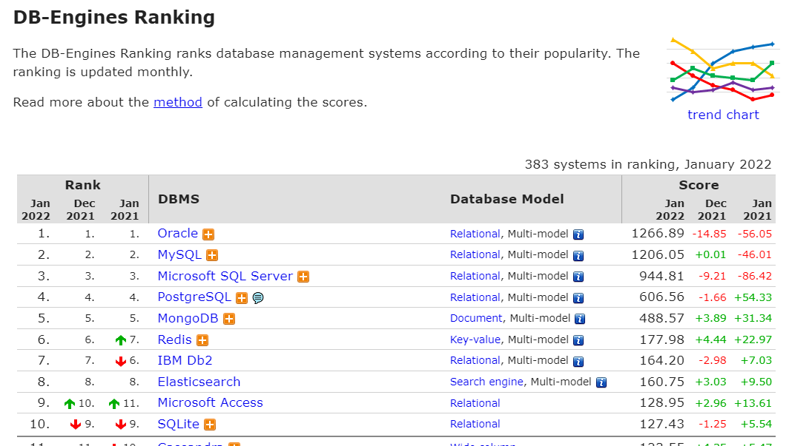
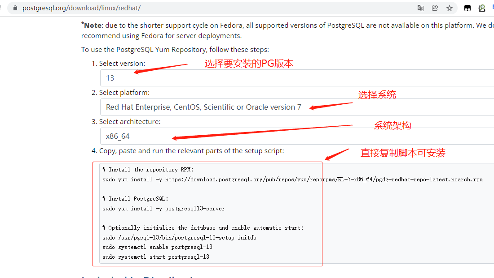
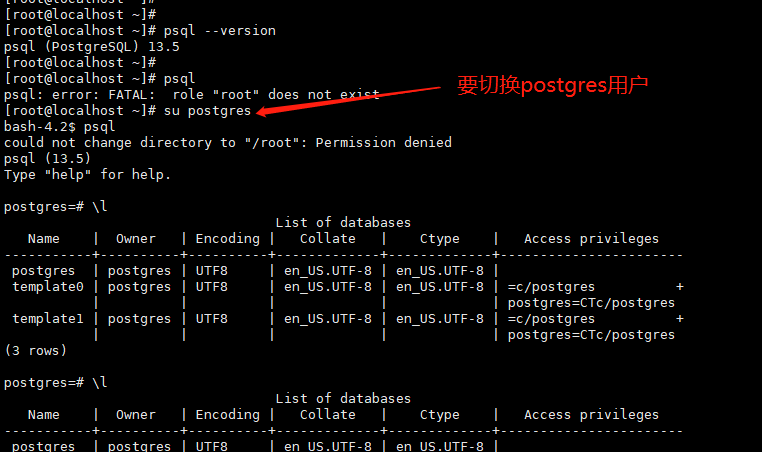
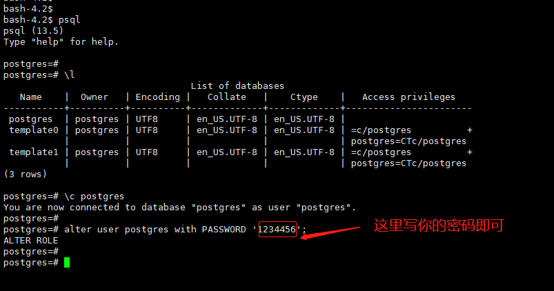
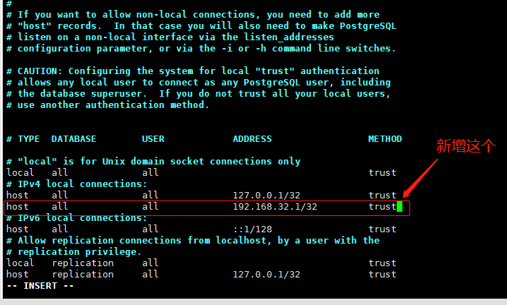
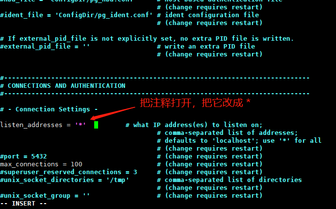
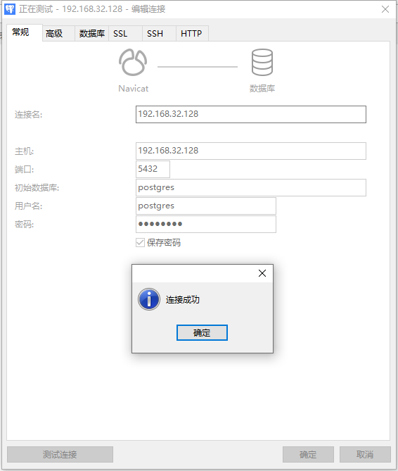

一、前言
- 好久没写文章了，也有小段时间没学习了。
- 刚好公司用到 PostgreSQL ,周末来学习一波
二、PostgreSQL简介
- PostgreSQL是一种特性非常齐全的自由软件的对象-关系型数据库管理系统，是以加州大学计算机系开发的POSTGRES，PostgreSQL支持大部分的SQL标准并且提供了很多其他现代特性， 如：复杂查询、外键、触发器、视图、事务完整性、多版本并发控制等。同样，PostgreSQL也可以用许多方法扩展，例如通过增加新的数据类型、函数、操作符、聚集函数、索引方法、过程语言等。另外，因为许可证的灵活，任何人都可以以任何目的免费使用、修改和分发PostgreSQL。
优点：
- 操作系统支持： WINDOWS、Linux、UNIX、MAC OS X、BSD。
- 支持ACID、关联完整性、数据库事务、Unicode多国语言。
- 支持R-/R+tree索引、哈希索引、反向索引、部分索引、Expression 索引、GiST、GIN（用来加速全文检索）
从8.3版本开始支持位图索引。
受欢迎程度
- 自从MySQL被Oracle收购以后，PostgreSQL逐渐成为开源关系型数据库的首选。
- 因为开源，所以很多国产数据库都是基于它开发的，比如Greenplum数据库
- 而且PostgreSQL在数据库排名也是挺靠前的，使用的人越来越多了

三、安装PostgreSQL
PostgreSQL 数据库写着太长了，以下简称 PG 数据库，哈哈
1、Centos7 安装PG数据库
- PG 支持很多系统，本文主要学习Linux 系统下的Centos7 安装，Centos算是常用的服务器系统
- Centos7安装有两种方式，一种是直接使用YUM安装，一种使用源码安装。
①、YUM安装
- 访问网址：https://www.postgresql.org/download/linux/redhat/
- 选择你要安装的版本，然后执行官方给出的命令脚本即可，如下：

- 脚本如下：
# 安装yum 源 |
- 上面命令执行完之后，就可以使用PG数据库了。
- 默认的安装目录是：
/usr/pgsql-13/,数据目录在：/var/lib/pgsql/13/data/ - 安装完毕后，系统会创建一个数据库超级用户
postgres，密码随机，但是psql可以连接。 - 执行
psql连接数据库，但是需要切换到postgres用户。

修改postgres的默认密码：
- 方式一：
- 1、操作系统切换到
postgres用户，执行、psql进入控制台。 - 2、然后执行：
\password，然后按提示输入你要修改的密码即可。
- 1、操作系统切换到
- 方式二：
- 1、操作系统切换到
postgres用户，执行、psql进入控制台。 - 2、执行如下即可：
- 1、操作系统切换到
# 切换到postgres 库 |

还有其他命令
如，关闭重启服务，如下：
# 重启PG数据库
sudo systemctl restart postgresql-13
# 关闭PG数据库
sudo systemctl stop postgresql-13YUM安装到这基本就结束了
②、源码安装
- 访问官网地址：https://www.postgresql.org/ftp/source/v13.5/
- 下载对应的版本，我这边还是下载13 的版本
|
Ⅰ、配置postgres用户环境变量
- 编辑postgres用户的
.bash_profile文件
vim /home/postgres/.bash_profile |
- 其中
/postgresql/data是PG数据库的存放数据目录
Ⅱ、初始化数据库
- 开始初始化数据库
# 创建PG数据库的数据目录 |
- 然后就可以执行
psql登陆到控制台了，后面的操作就可以yum按照一样了。
常用命令：
pg_ctl start |
2、PG数据库配置远程连接
- 需要进入到PG数据库的数据目录
- 修改
pg_hba.conf和postgresql.conf配置文件
1、修改pg_hba.conf
# 新增如下,把192.168.32.1 改成你所在的网段即可 |

2、修改postgresql.conf
- 把
listen_addresses='localhost'改成listen_addresses='*' - 如下图所示，两个文件都修改了之后，重启一下服务：
pg_ctl restart

记得把系统防火墙放开，默认的PG数据库端口是 5432

3、常用命令
- 列出一些控制台常用的命令吧
# 设置密码 |